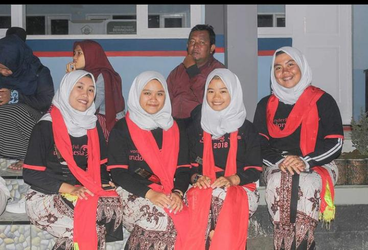
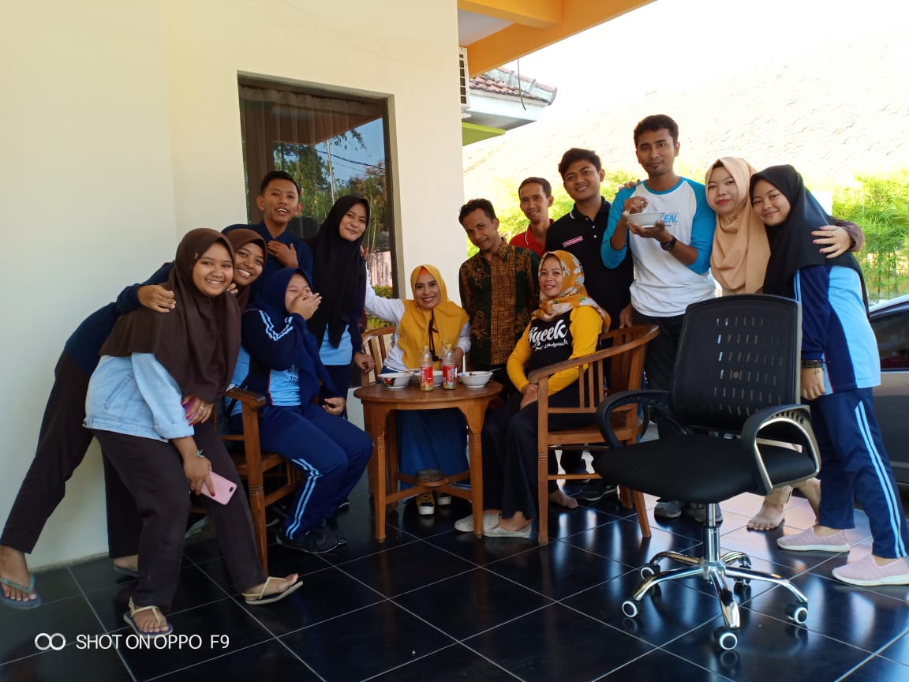

Nama Lengkap : Nabila Marsyanda Tempat Tanggal Lahir : Banyuwangi,17 Oktober 2001 Jenis Kelamin : Perempuan Alamat : Jalan rengganis gang gaplek no. 474 Hobi : Memasak dan menari
Riwayat Pendidikan No. Jenjang Pendidikan Tahun 1. TK TK Islam Darul Falah 2006 - 2008 2. SDN 1 Mojopanggung 2008 - 2015 3. SMP Negeri !Giri 2015 - 2017 4. SMK Negeri 1 Glagah 2017 -2020 5. STIKOM PGRI Banyuwangi 2020 - Sekarang
Pengalamana Kerja Menjadi pelatih tari di kampung  Foto disaat saya menjadi pelatih tari Magang di Radio Blambangan FM Banyuwangi  Foto saya saat magang di Radio Blambangan FM Banyuwangi
Hard Skill Editing foto menggunakan Picsart, Lightroom, VSCO dll 70 skill Office (Word,Power Point,Excel) 85 Editing video di HP menggunakan Capcut, VN, dan Kinemaster 90